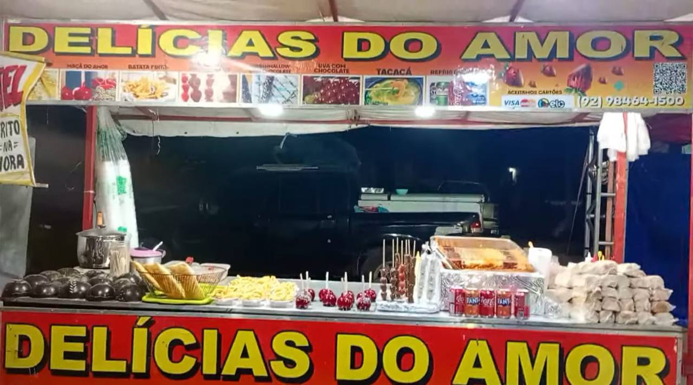
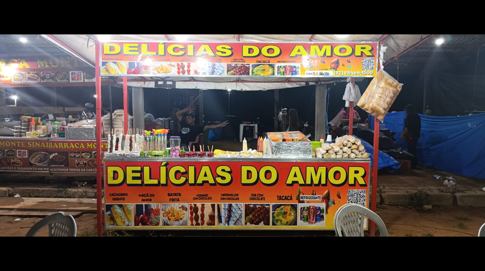
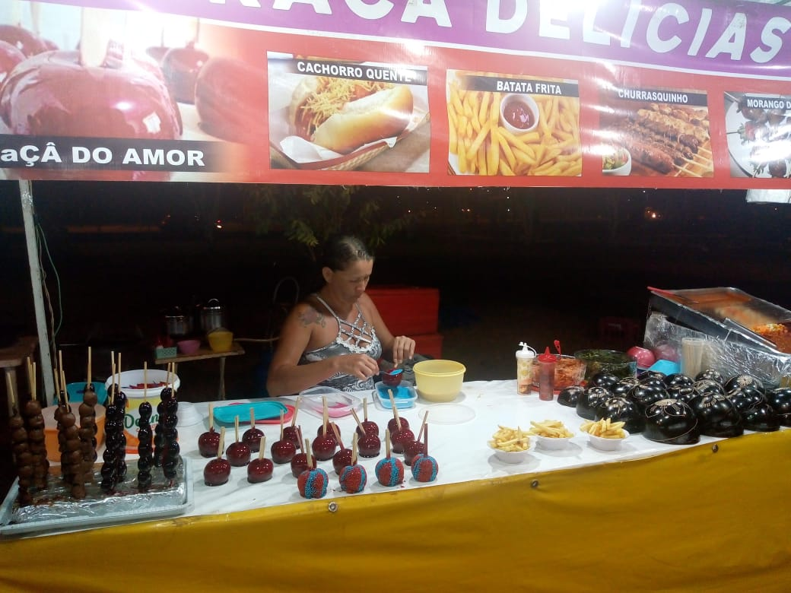
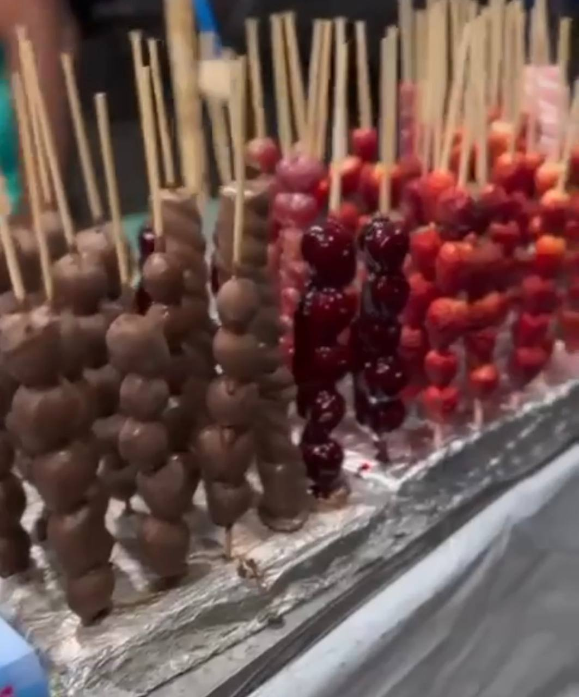
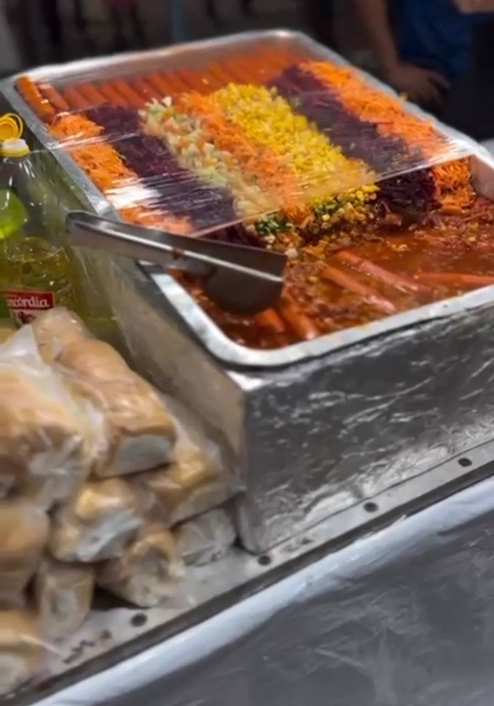
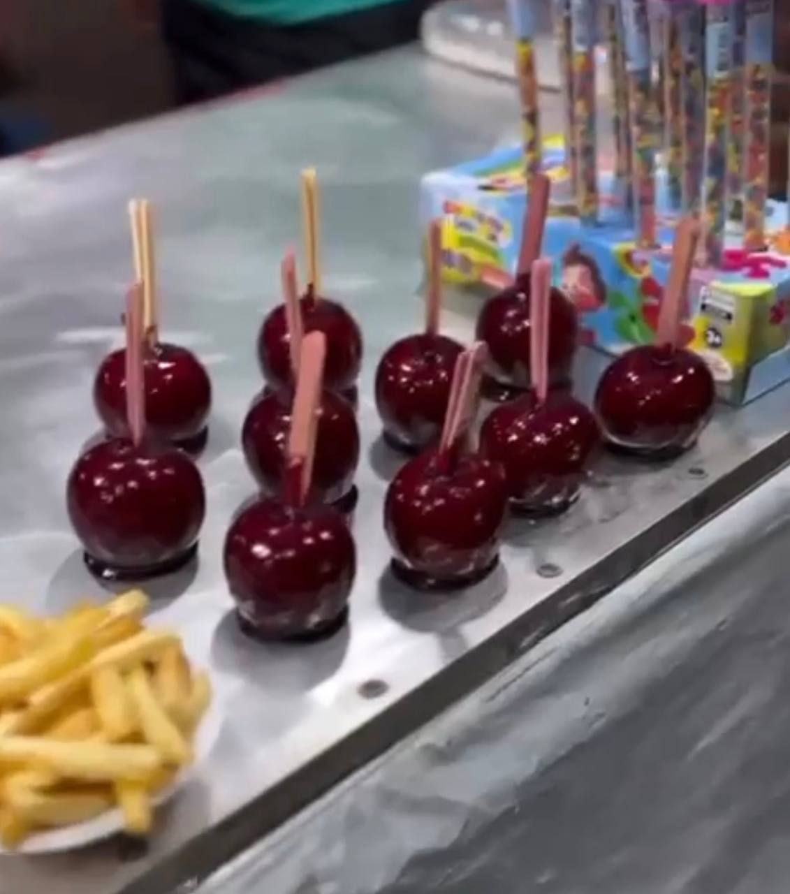
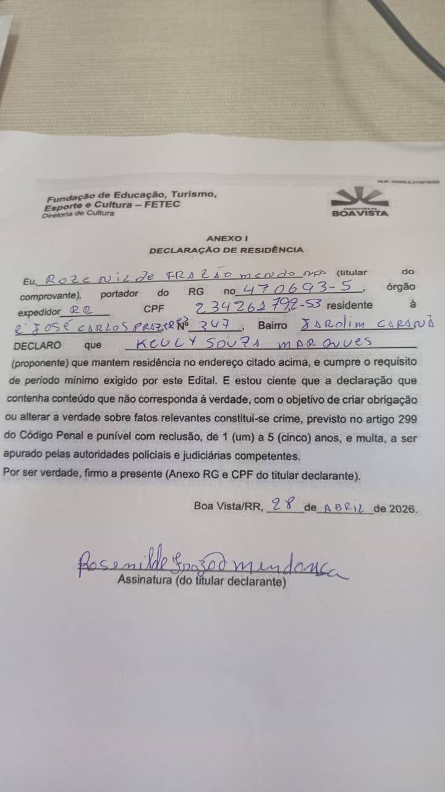

A Delícias do Amor é um empreendimento gastronômico com tradição e experiência consolidada ao longo de mais de 30 anos de atuação em eventos públicos, culturais e comunitários.
Com origem em uma história familiar no ramo alimentício, a barraca iniciou suas atividades quando a responsável tinha 18 anos, dando continuidade a um legado de trabalho, dedicação e compromisso com a qualidade.
Atualmente, participa de eventos organizados pela prefeitura, como arraiais, festividades culturais e eventos em praças públicas.
Atuação consolidada no ramo alimentício.
Participação em arraiais, festas comunitárias e eventos em praças.
Organização para atender grande fluxo de pessoas.
História construída com dedicação, trabalho e compromisso.
A barraca oferece um cardápio variado, atendendo diferentes públicos com produtos preparados com atenção à higiene, qualidade e sabor.
Produtos preparados com cuidado e atenção.
Compromisso com boas práticas no preparo.
Opções para diferentes públicos e eventos.
Foco na satisfação dos clientes e organizadores.

Estrutura da barraca
Atuação em evento
Preparo dos produtos
Doces e atendimento
Alimentos preparados
Maçã do amorA barraca possui estrutura adequada para funcionamento em eventos, garantindo organização, praticidade e segurança no preparo e na venda dos alimentos.
Espaço preparado para atendimento ao público.
Cuidado no preparo e armazenamento dos alimentos.
Estrutura eficiente para eventos movimentados.
Funcionamento adequado para ambientes públicos.
A Delícias do Amor está preparada para contribuir com a qualidade dos eventos públicos, oferecendo alimentos saborosos, atendimento eficiente e uma experiência positiva ao público.
Com trajetória sólida e compromisso com o trabalho, a barraca se coloca à disposição para participação em eventos promovidos pela prefeitura e demais organizações.
Confira um registro em vídeo da barraca Delícias do Amor em funcionamento, mostrando a estrutura, os produtos e o atendimento ao público durante o evento.

Delícias do Amor
Responsável: Keuly Souza Marques